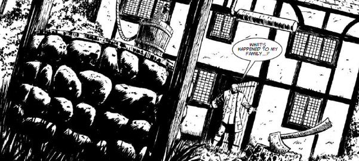

There's a zombie apocalypse in 17th century Britain.
Art by Leigh Gallagher
| Story Title | Parts | Pages | w indicates a wraparound coverCovers | Year(s) | Issues | Writer | Artist | Colourist | Letterer |
|---|---|---|---|---|---|---|---|---|---|
| 1666 | 10 | 60 | 1541: Vince Locke 1545: Nick Percival 2 | 2007 | 1540-1549 | Pat Mills | Leigh Gallagher | [b&w] | Ellie de Ville |
| Brethren of the Night | 10 | 61 | 1589: Leigh Gallagher 1594: Luke Preece 1597: Karl Richardson 3 | 2008 | 1589-1598 | Pat Mills | Leigh Gallagher | [b&w] | Ellie de Ville |
| Queen of the Zombies | 10 | 60 | 1640: Leigh Gallagher 1643: Leigh Gallagher 1646: Simon Davis 3 | 2009 | 1640-1649 | Pat Mills | Leigh Gallagher | [b&w] | Annie Parkhouse |
| A Murder of Angels | 10 | 61 | 1701: Leigh Gallagher 1704: Leigh Gallagher 1709: Leigh Gallagher 3 | 2010 | 1700-1709 | Pat Mills | Leigh Gallagher | [b&w] | Ellie de Ville |
| The Damned | 12 | 72 | 1836: Leigh Gallagher 1842: Leigh Gallagher & Dylan Teague 1846: Tiernan Trevallion 3 | 2013 | Reprints: M411‑M412 (supplements)1836-1847 | Pat Mills | Leigh Gallagher | [b&w] | Ellie de Ville |
| Frankensteiner | 1 | 8 | 0 | 2014 | Reprints: M412 (supplement)WS9 | Pat Mills | Leigh Gallagher | [b&w] | Ellie de Ville |
| The London Hanged | 11 | 78 | 1952: Leigh Gallagher 1958: Leigh Gallagher 2 | 2015 | Reprints: M412‑M413 (supplements)1950-1960 | Pat Mills | Leigh Gallagher | [b&w] | Annie Parkhouse |
| Diehards | 14 | 84 | 2026: Cliff Robinson & Dylan Teague (C) 2033: Paul Davidson 2 | 2017 | 2026-2039 | Pat Mills | Colin MacNeil | [greyscale] | Ellie de Ville |
| The Divisor | 12 | 73 | 2151: Stewart Kenneth Moore [w] 2155: Stewart Kenneth Moore 2160: Stewart Kenneth Moore [w] 1,2w | 2019 | 2150-2161 | Pat Mills | Stewart Kenneth Moore | [b&w] | Ellie de Ville |
| >> Posters / Teasers << | |||||||||
Subtitled: "The Brethren of the Night".The Dead Will Have Their Due | 1 | 1 | 0 | 2007 | p2008 | n/a | Leigh Gallagher | <-- | n/a |
| Eat the Rich - Defoe: The London Hanged | 1 | 1 | 0 | 2015 | Reprints: M362SFS21 | n/a | Leigh Gallagher | [b&w] | n/a |
| The Divisor | 1 | 1 | 0 | 2019 | Reprints: 2146M411 | n/a | Stewart Kenneth Moore | [b&w] | n/a |
| >> Features << | |||||||||
| Behind the Thrills: Defoe | 1 | 1 | 0 | 2009 | 1656 | Edward Kaye | Leigh Gallagher | <-- | n/a |
Annotated map.Defoe's London Rebuilt After the Comet | 1 | 1 | 0 | 2015 | 1950 | Pat Mills | Leigh Gallagher | [b&w] | Annie Parkhouse |
| year | episodes | pages |
| 2001 | 0 | 0 |
| 2002 | 0 | 0 |
| 2003 | 0 | 0 |
| 2004 | 0 | 0 |
| 2005 | 0 | 0 |
| 2006 | 0 | 0 |
| 2007 | 10 | 60 |
| 2008 | 10 | 61 |
| 2009 | 10 | 60 |
| 2010 | 10 | 61 |
| 2011 | 0 | 0 |
| 2012 | 0 | 0 |
| 2013 | 12 | 72 |
| 2014 | 1 | 8 |
| 2015 | 11 | 78 |
| 2016 | 0 | 0 |
| 2017 | 14 | 84 |
| 2018 | 0 | 0 |
| 2019 | 12 | 73 |
| 2020 | 0 | 0 |
| 2021 | 0 | 0 |
Comic strip data (excludes other content):